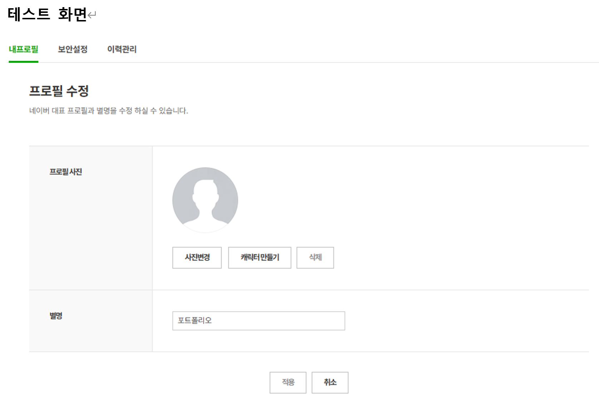
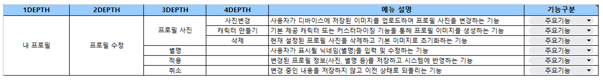
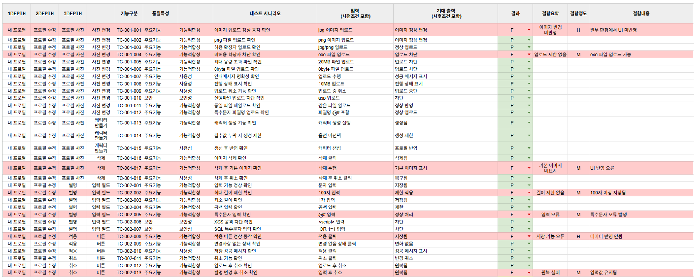
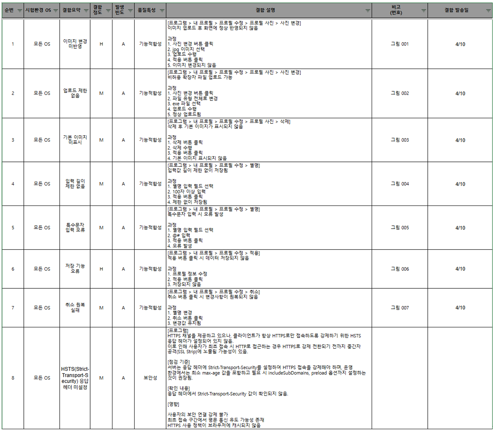

웹 서비스의 내 프로필 편집 기능을 대상으로 기능, 사용성, 보안성, 성능을 포함한 전반적인 품질 검증을 수행하였습니다. 단순 기능 동작 여부만 확인하는 수준이 아니라, 메뉴 구조를 기준으로 테스트 범위를 정의하고 기능 단위별 테스트 케이스를 설계하여 체계적으로 검증하였습니다.
테스트 수행 과정에서 발견된 결함은 재현 가능한 형태로 정리하여 결함 리포트로 작성하였고, 개발 수정 이후에는 동일 테스트 케이스를 기준으로 재검증을 수행하였습니다. 또한 수정 과정에서 영향을 받을 수 있는 범위를 확인하기 위해 전체 기능 대상 회귀 테스트를 진행하여 최종 품질을 검증하였습니다.
추가로 보안 점검 도구인 Invicti를 활용하여 입력값 검증, 파일 업로드, HTTPS 보안 설정, 인증서, TLS 암호화 설정 등 기능 테스트만으로 확인하기 어려운 보안 취약점까지 함께 점검하였습니다. 성능 측면에서는 서버와 클라이언트 양측에서 자원 사용량을 측정하여 실제 서비스 환경에서의 안정성을 확인하였습니다.

본 프로젝트는 웹 서비스 내 프로필 수정 화면을 대상으로 시험을 수행하였습니다. 주요 시험 대상은 프로필 사진 변경, 캐릭터 생성, 삭제, 별명 입력, 적용 및 취소 기능이었으며, 사용자 관점에서 실제 사용 흐름을 기준으로 기능 동작 여부를 검증하였습니다.

메뉴 트리를 기준으로 기능 단위를 분리하고, 각 기능별로 테스트 범위를 정의하였습니다. 프로필 사진 기능은 사진 변경, 캐릭터 만들기, 삭제로 세분화하였고, 별명 입력 및 적용/취소 버튼도 각각 독립적인 시험 항목으로 구성하였습니다.
메뉴 트리를 기준으로 기능 단위를 분리하고, 각 기능별로 테스트 케이스를 설계하였습니다. 테스트 케이스는 단순 정상 동작 여부만 확인하는 것이 아니라, 사용자 관점과 시스템 관점을 함께 반영하여 작성하였습니다.
테스트 설계 시 다음 기준을 포함하였습니다.
• 기능적합성: 기능이 요구사항에 맞게 정상 동작하는지 검증
• 사용성: 안내 메시지, UI 흐름, 사용자 편의성 검증
• 보안성: 입력값 검증, 파일 업로드, 취약점 검증
• 운영성: 실행 상태 표시, 취소 기능, 처리 흐름 검증
또한 모든 테스트 케이스는 사전조건, 기대 결과, 실제 결과, 결함 여부를 포함하여 작성하였으며, 재현 가능한 형태로 관리하였습니다. 이 과정을 통해 테스트 수행 이후 결함 발생 시 원인 추적과 수정 검증이 가능하도록 구성하였습니다.
추가로 다음과 같은 방향을 반영하여 테스트를 설계하였습니다.
• 정상 시나리오와 비정상 시나리오를 함께 검증
• 파일 업로드, 입력 필드, 버튼 동작 등 사용자 영향이 큰 기능 우선 점검
• 기능 결함뿐 아니라 보안 취약점까지 함께 도출할 수 있도록 테스트 항목 구성
• 수정 이후 재검증과 회귀 테스트까지 연결 가능한 구조로 설계

테스트 케이스는 메뉴 구조를 기준으로 기능 단위별로 설계하였습니다. 기능적합성, 사용성, 보안성을 구분하여 각 항목별 검증 포인트를 도출하였고, 결과는 P, F, N/A 기준으로 기록하였습니다.
특히 사진 변경 기능은 업로드 정상 동작, 업로드 제한, 실행파일 업로드 차단, 안내 메시지, 진행 상태, 취소 기능까지 세분화하여 설계하였고, 별명 입력 기능은 입력 제한, 특수문자 처리, XSS 및 SQL 특수문자 검증까지 포함하여 보안성을 함께 점검하였습니다.
또한 버튼 기능은 단순 클릭 여부만 확인하는 것이 아니라, 실제 저장 반영 여부와 취소 시 원복 여부까지 검증하여 사용자의 최종 작업 결과가 정확하게 처리되는지를 확인하였습니다.

테스트 수행 결과 실패(F)한 항목에 대해서는 결함 리포트를 작성하였습니다. 결함 리포트는 단순히 문제를 나열하는 형태가 아니라, 실제 재현 가능한 절차를 포함하여 작성하였습니다. 각 결함은 순번, 시험환경 OS, 결함요약, 결함정도, 발생빈도, 품질특성, 결함 설명, 비고, 결함 발송일 기준으로 정리하였습니다.
결함 설명에는 다음 내용을 포함하였습니다.
• 메뉴 경로
• 실제 발생 현상
• 재현 과정
• 필요한 경우 참고 화면 번호
이를 통해 개발자와의 커뮤니케이션 시 결함 전달 정확도를 높였고, 수정 이후 동일한 절차로 재검증이 가능하도록 관리하였습니다.
주요 결함 사례는 다음과 같습니다.
• 이미지 변경 후 UI에 즉시 반영되지 않는 현상
• 비허용 확장자 업로드 가능
• 삭제 후 기본 이미지 미표시
• 별명 입력 길이 제한 미적용
• 특수문자 입력 오류
• 적용 버튼 클릭 시 데이터 저장 실패
• 취소 버튼 클릭 시 변경사항 원복 실패
• 업로드 진행 상태 미표시
• HSTS(Strict-Transport-Security) 헤더 미설정 또는 설정 미흡
보안성 검증을 위해 웹 취약점 스캐닝 도구인 Invicti를 활용하여 테스트를 수행하였습니다. 전체 웹 경로를 대상으로 자동 스캔을 수행한 후, 탐지된 취약점에 대해 실제 기능 테스트와 결합하여 재현 검증을 진행하였습니다.
특히 다음 항목을 중심으로 보안성을 점검하였습니다.
• 입력값 검증 미흡 여부
• 스크립트 파일 업로드 가능 여부
• XSS 취약점
• HTTPS 보안 설정
• HSTS(Strict-Transport-Security) 헤더 설정 여부
• 인증서 유효성 및 인증서 대상 정보 일치 여부
• SSL/TLS 프로토콜 및 암호화 스위트 보안 수준
• 서버 및 라이브러리 버전 정보 노출 여부
테스트 결과 입력값 검증 및 파일 검증 로직이 미흡한 것으로 확인되었으며, 실행파일 업로드 취약점과 XSS 취약점이 도출되었습니다. 또한 설정 영역에서는 HSTS 미설정 또는 설정 미흡, 인증서 정보 불일치, 취약한 TLS 암호화 스위트 활성화, 구버전 TLS 허용 등 보안 설정 관점의 개선 필요 사항도 확인하였습니다.
이 과정에서 단순히 취약점 탐지 결과를 확인하는 데 그치지 않고, 실제 서비스에 어떤 영향을 줄 수 있는지까지 함께 분석하였습니다. 예를 들어 HSTS 미설정은 HTTPS 강제 정책이 적용되지 않아 최초 접속 구간에서 보안성이 저하될 수 있고, 취약한 TLS 설정은 최신 보안 기준에 미달하여 서비스 신뢰도와 보안 수준에 영향을 줄 수 있음을 확인하였습니다.
서버 환경에 따라 다음 도구를 활용하여 성능을 측정하였습니다.
• Linux 환경: vmstat
• Windows 환경: 성능 모니터
서버와 클라이언트 양측에서 CPU, 메모리, 시스템 부하를 동시에 측정하여 실제 서비스 환경에서의 성능을 확인하였습니다. 특히 기능 수행 시점과 결함 발생 가능성이 있는 구간을 기준으로 자원 사용량을 함께 분석하여, 단순 사용량 확인이 아니라 기능과 성능 간의 연관성도 함께 검토하였습니다.
측정 결과 시스템 자원 사용은 전반적으로 안정적인 수준을 유지하였으며, 과부하 상황에서도 성능 저하 및 병목 현상은 발생하지 않았습니다. 이를 통해 본 기능은 보안 및 기능적 보완은 필요했지만, 시스템 자원 사용 측면에서는 비교적 안정적인 구조로 동작하고 있음을 확인하였습니다.
1. 메뉴트리 기반 기능 구조 정의
2. 테스트 케이스 설계
3. 기능 테스트 수행
4. 보안 테스트 수행
5. 테스트 결과 기록(P/F/N/A)
6. 결함 도출 및 결함 리포트 작성
7. 개발 수정 요청 및 패치 적용
8. 동일 테스트 케이스 기반 재검증 수행
9. 전체 기능 대상 회귀 테스트 수행
10. 최종 품질 검증 완료
이 프로세스를 통해 테스트 설계부터 수정 검증, 회귀 테스트까지 일관된 기준으로 품질을 관리하였습니다.
기능은 전반적으로 정상 동작하였으나, 입력값 검증 및 파일 업로드 처리 과정에서 보안 취약점이 확인되었습니다. 또한 일부 기능에서는 UI 반영 지연, 저장 실패, 원복 실패와 같은 기능적 결함이 발생하였습니다.
결함 수정 이후 재검증을 수행하였으며, 추가적인 결함 발생 여부를 확인하기 위해 전체 기능에 대한 회귀 테스트를 진행하였습니다. 그 결과 최종적으로 모든 기능이 정상 동작함을 확인하였습니다.
즉, 본 테스트를 통해 기능 안정성뿐 아니라 보안성과 사용자 경험 측면의 문제까지 함께 도출하고 개선할 수 있었습니다.
• 메뉴 구조 기반 테스트 범위 정의 능력
• 기능 단위 테스트 케이스 설계 능력
• 사용자 시나리오 기반 테스트 수행 능력
• Invicti를 활용한 웹 취약점 분석 경험
• 입력값 및 파일 업로드 보안 검증 경험
• 성능 측정 및 시스템 자원 분석 경험
• 결함 재현 및 리포트 작성 능력
• 재검증 및 회귀 테스트 수행 능력
• 기능/보안/성능을 통합적으로 검증하는 QA 수행 능력
테스트 케이스 설계부터 테스트 수행, 결함 분석, 보안 및 성능 검증, 회귀 테스트까지 QA 전 과정을 수행하였습니다. 단순히 기능이 동작하는지 확인하는 수준을 넘어, 실제 서비스 품질에 영향을 주는 기능 결함과 보안 취약점을 함께 도출하고 개선 방향을 제시하였습니다.
이를 통해 기능 중심 테스트, 보안 점검, 성능 측정, 결함 관리, 재검증까지 연결되는 실무 중심의 QA 경험을 확보하였습니다.